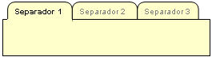

Uso del Aplicativo
Una plantilla de registro es un formulario que permite ingresar nuevos registros o modificar los existentes para una entidad.
Este formulario de edición despliega los campos del registro elegido, cada uno de sus campos con los valores actualmente almacenados, en el caso de un nuevo registro los valores asociados al campo pueden estar en blanco o sugerir un valor por omisión según sea el caso.
El formulario se puede dividir en partes, las cuales agrupan a su vez atributos relacionados funcionalmente. Cada una de las partes es identificada y accedida por separadores en la parte superior del formulario, para accederlas bastará con seleccionar una de ellas.

Uno de los Separadores tendrá el rol de principal, que significa que tiene precedencia sobre los otros, así la información contenida en este deberá existir antes de la información complementada en cualquier otro. El Separador principal además contiene el botón de “guardar”, con el cual se almacenan los cambios realizados o se crea el nuevo registro.
Por aspectos de conveniencia el formulario integrará el botón de “nuevo”, el cual recarga el formulario y lo dispone para ingresar un nuevo registro del mismo tipo.
Adicionalmente se incluye un botón “Lista” que permite volver a la lista, cancelando los cambios editados hasta el momento, este botón puede ser interpretado como “Cancelar”.

En algunos casos excepcionales, como puede encontrarse adicionalmente un botón para borrar el registro, sin embargo un registro no podrá ser borrado si ya es usado como referencia en el sistema, esta opción se reserva únicamente para resolver el ingreso de datos erróneos.
La plantilla de registro valida la congruencia de la información ingresada mediante la verificación de reglas de negocio preestablecidas, este proceso de validación puede ser ejecutado en tres momentos diferentes:
En la edición particular de un campo, es decir cuando se ingrese o edite un valor aislado en un campo del formulario. Usualmente estas validaciones corresponden a reglas simples sobre el formato del dato a ingresar y comparación con valores válidos.
En el grupo, es decir valida información conformada por un grupo de datos relacionados, esta validación permite verificar la congruencia de datos entre sí, se ejecuta al cambiar de separador.
A nivel de registro, es una verificación general del registro o edición del registro en relación a las reglas de negocio relacionadas con el negocio, se ejecuta al proceder con el botón de “guardar”.
En el caso de las validaciones cuando se detecte una inconsistencia, el sistema no procederá con el cambio o la inclusión y desplegará un mensaje de error que indicará la validación fallida y si procede la acción correctiva.